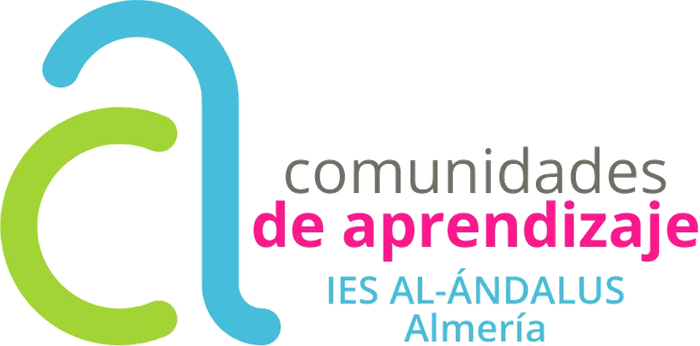

I.E.S. Al-Ándalus · Curso 2026-2027
Tus puntos en la Comunidad
Cómo se ganan, para qué sirven y qué puedes pedir con ellos.
Primero, lo importante
Una Comunidad de Aprendizaje abre el centro
Familias y voluntariado entran en las aulas y en los recreos a aprender con vosotros. No vienen a mirar: vienen a participar.
Cuantas más personas adultas hay dentro, más aprende todo el mundo.
A partir de ahora
Hay dos tipos de puntos
Académicos
Suben la notaLos ganas tú, participando.
Comunitarios
Sirven para recompensasLos gana tu familia y te los pasa.
Puntos académicos
Suben la nota de todas las materias
Al llegar a la meta, se te anota +1 en todas las materias en ese trimestre.
Solo los consigue el alumnado, participando en las actuaciones.
La meta de cada curso
¿Cuántos hacen falta?
Lo que sobre al pasar la meta cuenta para el trimestre siguiente.
Puntos comunitarios
Los gana tu familia viniendo
5 puntos comunitarios por cada participación de un familiarDa igual a qué venga: a un grupo interactivo, a una tertulia, a una comisión. Cada vez son 5, y te los pasa a ti para que pidas lo que quieras.
No suman nota. Sirven para recompensas.
2.º de Bachillerato y 2.º de SMR
Vosotros cobráis en comunitarios
Participáis en lo mismo y ganáis lo mismo que los demás, pero en puntos comunitarios en lugar de académicos.
Es lo justo: vuestra nota ya no se puede subir con esto, así que se cambia por recompensas.
Dónde se ganan
Las actuaciones
Y esto no es para más adelante
Ya están funcionando
Cada semana que toca tertulia dejamos copias del texto en el hall, para que puedas llevártelo en papel.
Con los puntos comunitarios
Esto se puede pedir
Lo más barato cuesta una sola participación de un familiar.
El catálogo no es definitivo: va a cambiar durante el curso.
Y ahora os toca a vosotros
¿Qué recompensas queréis?
Las vamos a decidir con vuestras ideas. Las apuntamos ahora entre todos, en una hoja para toda la clase.
Y lo otro: hablad en casa. Cada vez que venga alguien de vuestra familia, son 5 puntos para vosotros.